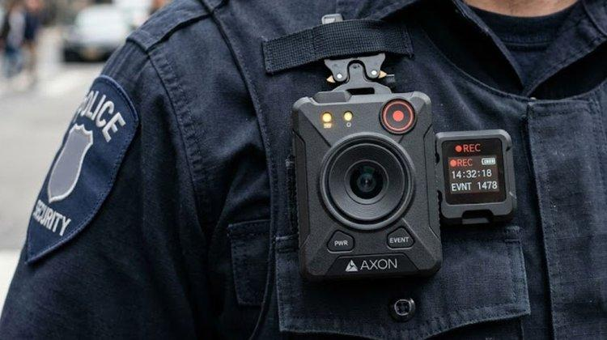

Law Enforcement
Patrol operations, field training, firearms instruction, report writing, and community engagement.
WELCOME TO MY PORTFOLIO
Law enforcement professional, United States Air Force veteran, and Computing Applications student at Texas Tech University.
Explore My WorkI am a law enforcement professional and United States Air Force veteran with a passion for leadership, technology, and public service.
My professional background includes patrol operations, field training, firearms instruction, and military aviation maintenance.
I am currently pursuing my degree in Computing Applications at Texas Tech University, where I am developing my skills in web development, information technology, and digital design.
My experience combines public service, leadership, technical expertise, and a commitment to continuous learning.
Patrol operations, field training, firearms instruction, report writing, and community engagement.
Seven years of service in the United States Air Force as a B-52H aircraft crew chief, specializing in aircraft maintenance, teamwork, and mission readiness.
HTML, CSS, responsive web design, information organization, computing applications, and technology integration.
A selection of my work demonstrating technical skills, professional interests, and continued development.

A knowledge base exploring modern law enforcement technology, including body-worn cameras, communications, and patrol equipment.
View ProjectA collection of projects demonstrating HTML, CSS, responsive layouts, Flexbox, and interactive web design.
View Coursework